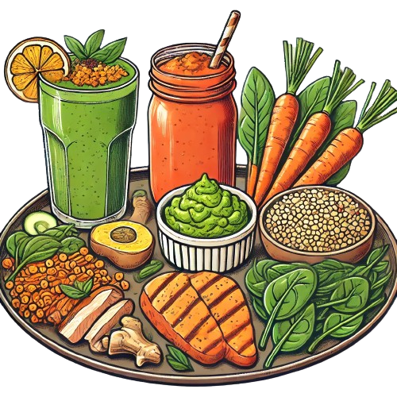

Protein-Rich Diet
Protein is crucial for maintaining muscle mass and strength, especially in older adults.
Vitamin-Rich Diet
This diet focuses on foods rich in various vitamins, particularly vitamins A, C, D, and E.
Calcium and Vitamin D-Rich Diet
Calcium and vitamin D are essential for bone health.
Heart-Healthy Diet
This diet focuses on foods that support cardiovascular health, emphasizing healthy fats and fibers.

Anti-Inflammatory Diet
An anti-inflammatory diet can help manage inflammation-related conditions common in older adults.